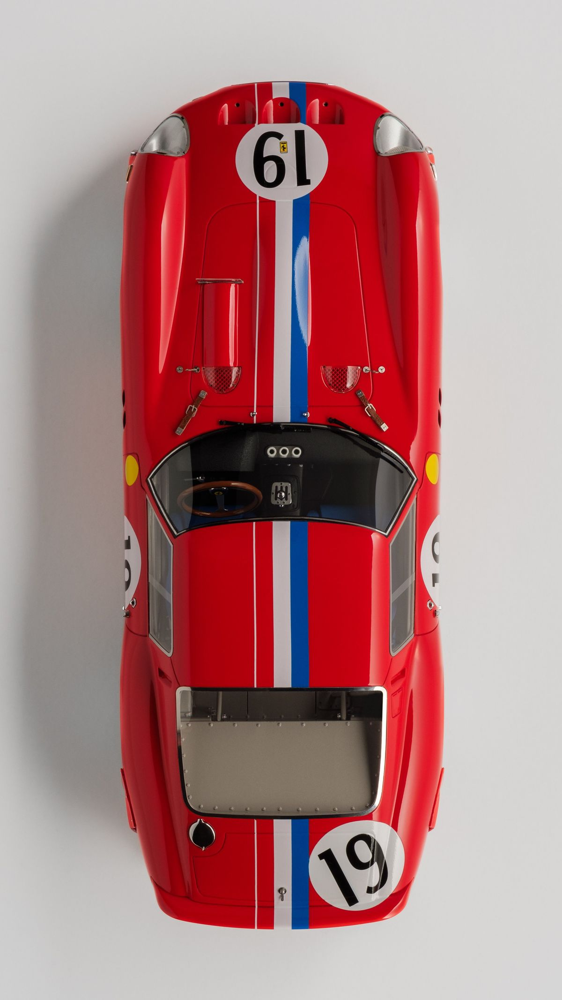

The 1966 Ferrari 330 P3 was a legendary V12-powered sports prototype racer designed to challenge Ford in endurance racing, featuring a 420 hp 4.0-liter engine with Lucas fuel injection. Only three factory 330 P3 chassis were built, distinguished by their fiberglass tub, tubular steel frame, and exceptional, low-profile, and lightweight design.
